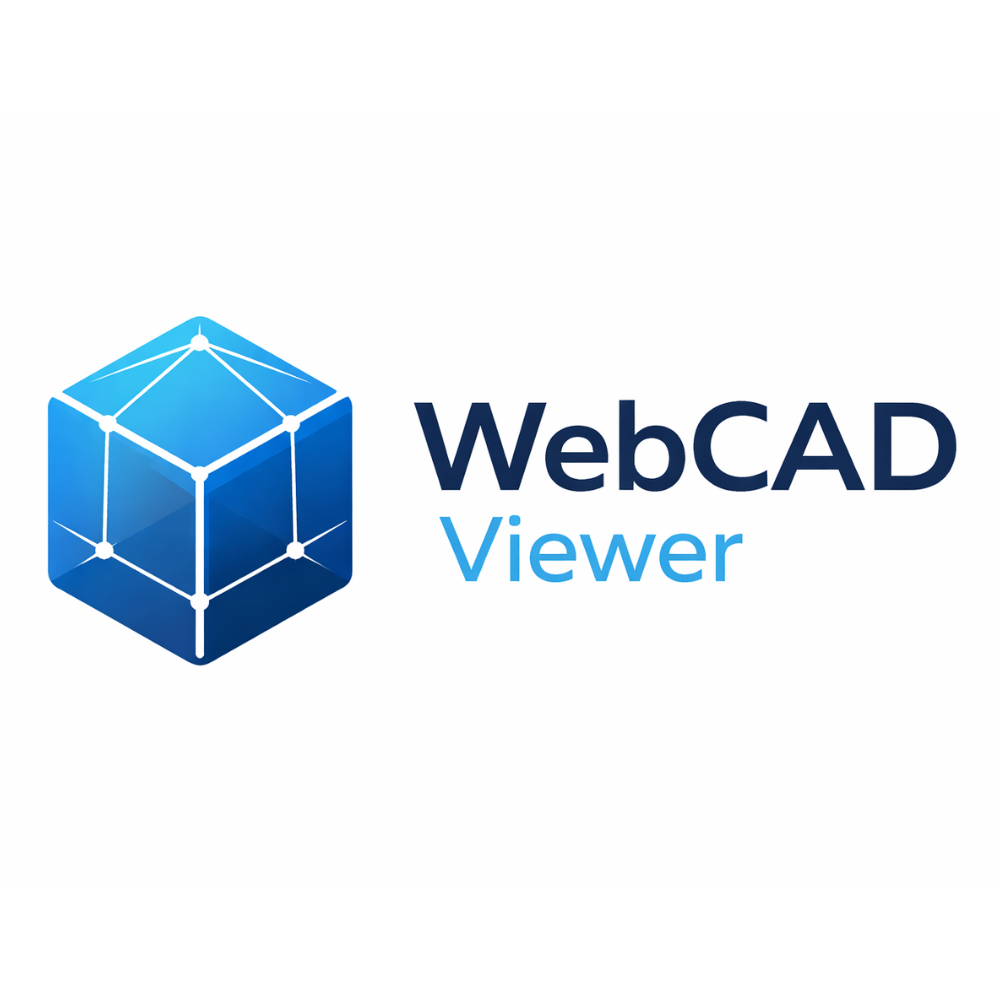

Websites

WebCAD Viewer
Browser-based 3D model viewer built with Three.js supporting OBJ, STL, and FBX files, featuring real-time rendering and interactive inspection tools.
View Website
Browser-based 3D model viewer built with Three.js supporting OBJ, STL, and FBX files, featuring real-time rendering and interactive inspection tools.
View Website